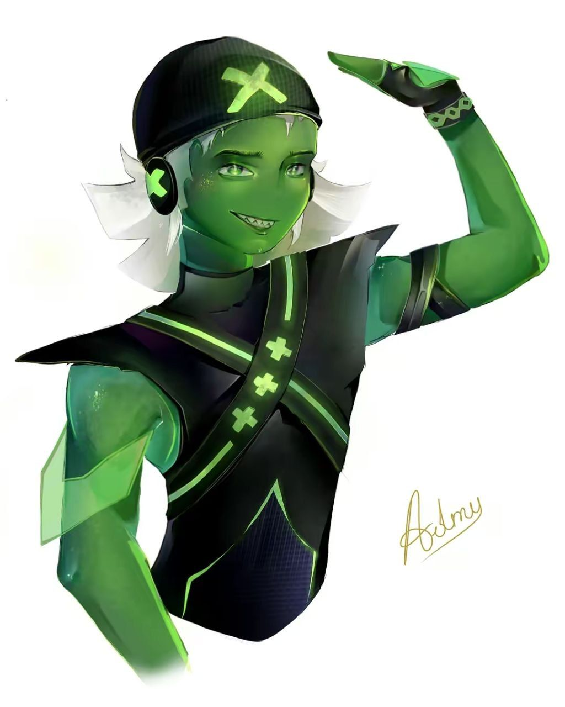
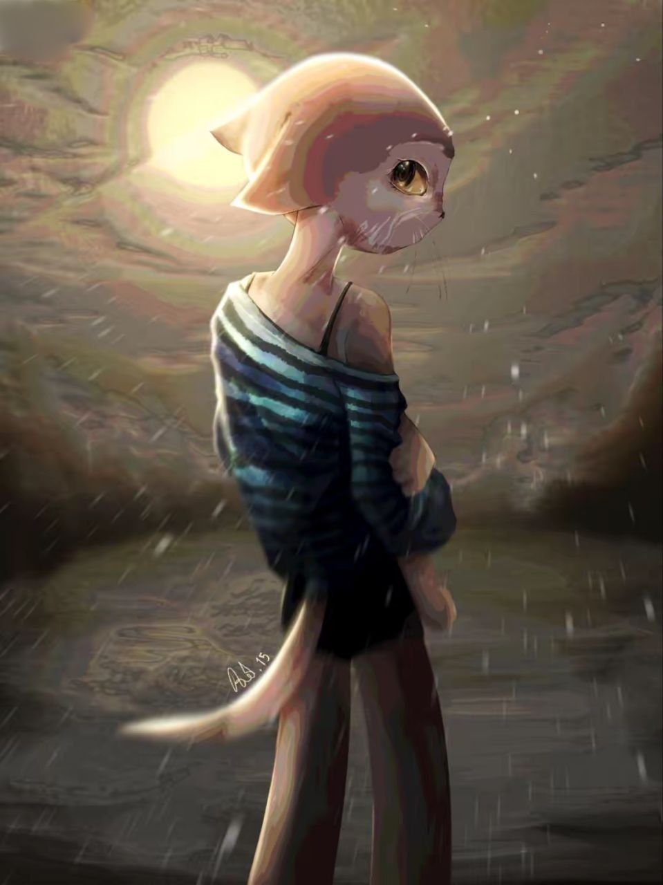
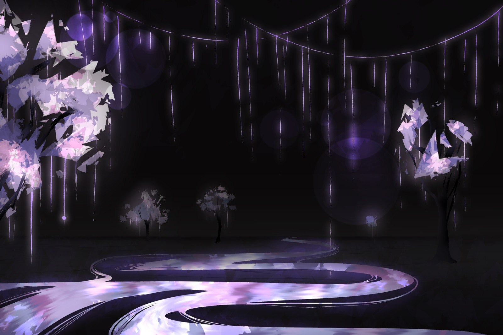
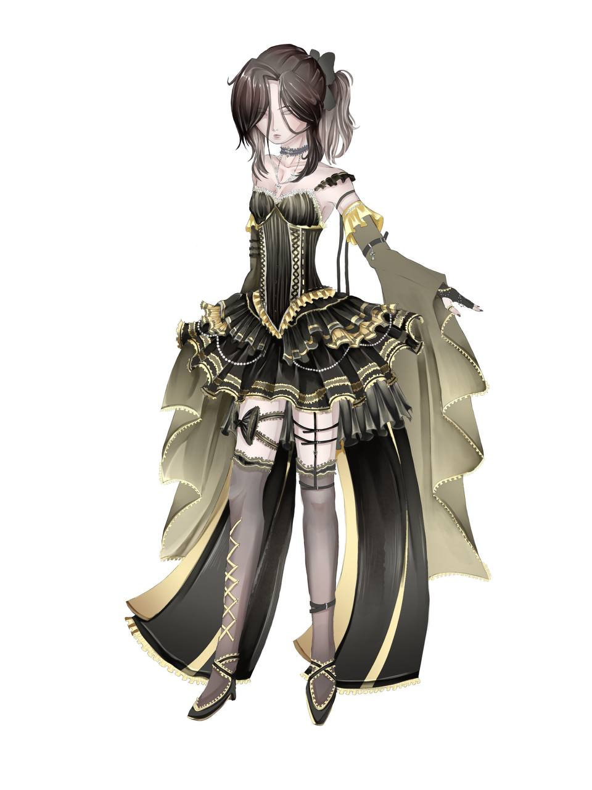
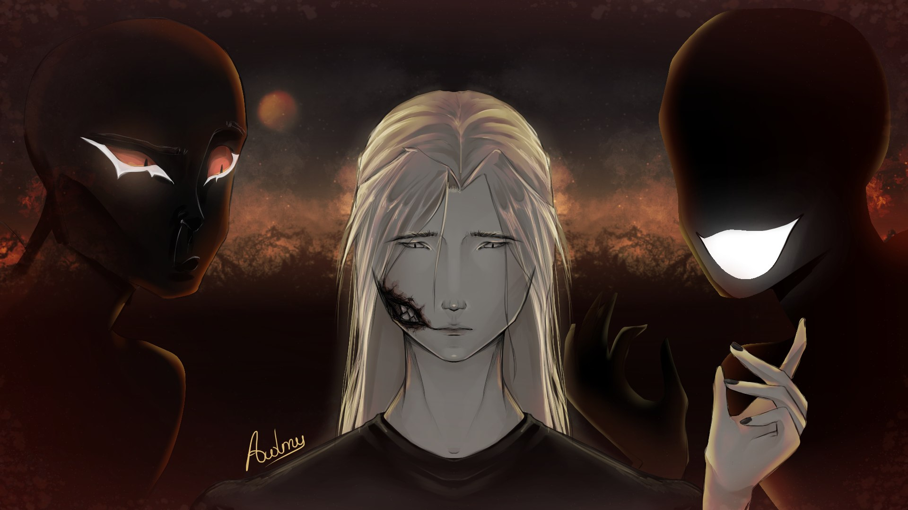
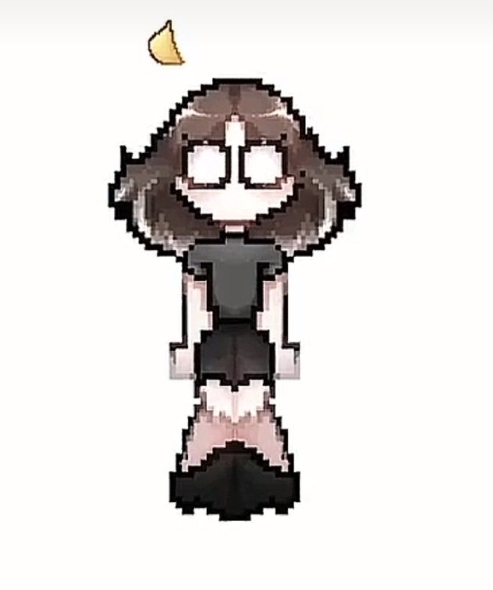
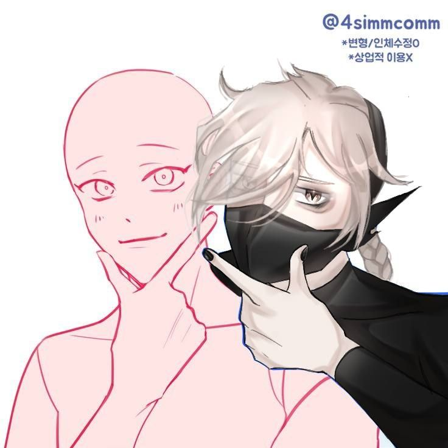

MANUSCRIPT I
The Artist Behind the Mask ✟
❖ ────────── ✥ ────────── ❖
Salut!^^ Sunt o artistă de 17 ani aflată într-o continuă explorare vizuală. Călătoria mea a început în 2021, desenând pe ecranul telefonului, iar astăzi îmi transpun viziunile pe o tabletă grafică.
Mă definesc prin contrastul dintre negru profund și auriu strălucitor — o combinație care mă caracterizează perfect. La fel ca o eclipsă solară, pot părea rece la exterior, însă în interior sunt un spirit cald.
Sunt pasionată de estetica Goth Lolita și ador pisicile, elemente care își găsesc adesea locul în creațiile mele digitales realizate în Krita.
✥ ✥ ✥
_^~ Arhiva de Proiecte ~^_

BAN
[ FILE // 01 ]
FAN ARTS
[ FILE // 02 ]
Procreate
[ FILE // 03 ]
IbisPaint
[ FILE // 04 ]
Krita
[ FILE // 05 ]
ME
[ FILE // 06 ]
My Characters
[ FILE // 07 ]
✟ Click oriunde pentru a reveni ✟
Atmospheric Playlist
Still Loving You [01]
На заре [02]
Тёплые коты [03]
Скинь котиков [04]
Я свобоden [05]
I know I know. - Hatsune Miku [06]
HOYO-MiX - TruE (feat. Isabelle Huang) [07]
Music for Лололошка - НОВОЕ ПОКОЛЕНИЕ [08]
This is my goodbye... [09]
東京真中 (Tokyo Manaka) [10]
Wanacry.exe [11]
Bernadette [12]
Mother Mary [13]
Heaven [14]
No surprises [15]
Imnul CCCP [16]
❖